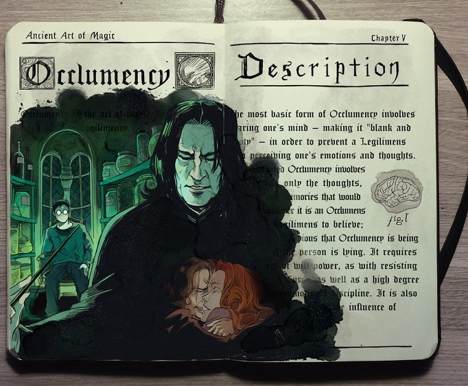

Gabriel PicoloGabriel Picolo es un ilustrador brasileño experto en dibujar cómics que domina la ilustración tradicional y digital. Hace poco lo descubrí a través de Instagram y me encantó. Picolo asegura haber comenzado a dibujar desde antes de lo que pueda recordar pero en 2013 estuvo a punto de dejarlo. En el 2014 se propuso retomar el dibujo y lanzó un proyecto llamado "365 días de doodles", el cual consistía en hacer un dibujo al día durante un año y compartirlo en las redes sociales. Ese reto y su impecable estilo de dibujo le ha llevado a tener más de un millón y medio de seguidores en Instagram. Su estilo está influenciado por los juegos de Final Fantasy, así como en Studio Ghibli, Disney, videojuegos y cómics, aunque especialmente dibuja sobre la saga Teen Titans de DC Comics. Los fan arts de Picolo sobre esta serie se han hecho mundialmente famosos, llevando a sus fans a hacer diversos cosplays de su versión de la saga, e incluso ha sido elegido para ilustrar "Teen Titans: Raven" de DC Cómics. |
 |
|
También se volvió muy viral su cómic sobre el amor imposible entre Ícaro y el Sol, que está basada en la famosa historia de la mitología griega en la que un hombre murió al tratar de volar demasiado cerca del sol, al haber hecho sus alas con plumas y cera. No obstante, la versión de Gabriel es hermosa y única. Y no puedo evitar destacar las ilustraciones basadas en Harry Potter que dibujó durante un inktober, que encantarán a todo fan. Hizo un libro de pócimas de magia ilustrado con escenas de la saga (incluyendo un homenaje a Alan Rickman). Gabriel tiene un estilo cómic muy característico pero, además, hay que destacar lo 'vivos' que parecen sus personajes, siempre mostrando a parejas compartiendo experiencias juntos, grupos de amigos riendo, escenas del día a día en casa... Si quieres seguir más de cerca el trabajo de Gabriel Picolo, es muy activo en redes sociales, así que te recomiendo echar un vistazo a sus páginas de Facebook, Instagram y DeviantArt. También, tiene una cuenta en Patreon, una plataforma donde los artistas pueden ser patrocinados por sus seguidores, recibiendo pequeños pagos cada mes para que sigan realizando sus trabajos. De esta manera, muchos artistas se ganan la vida haciendo lo que realmente les apasiona. |
|